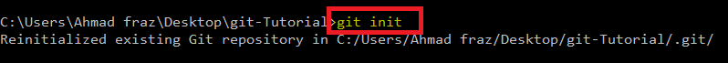
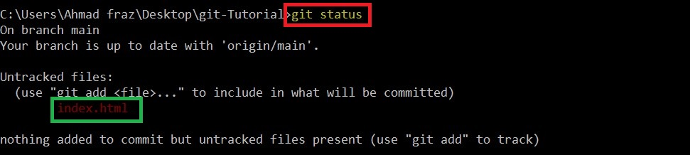
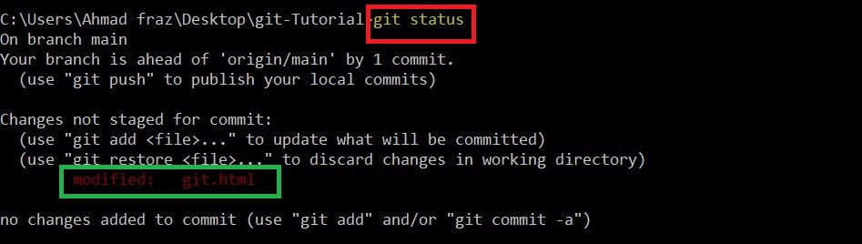
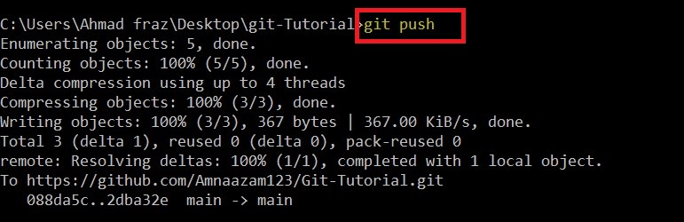
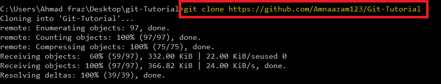
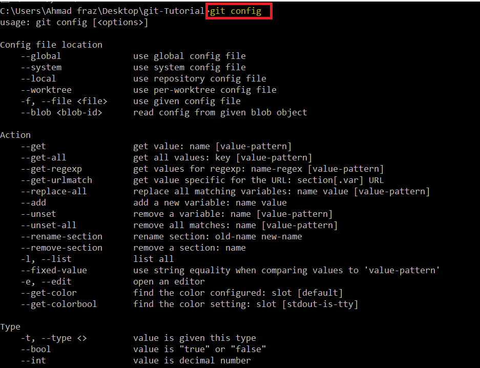
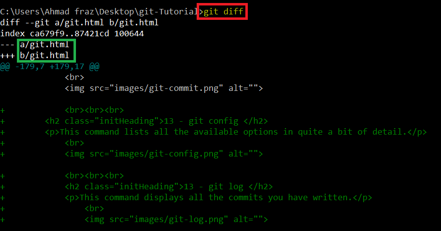

Name : Amna Azam
Roll no : BSEF19M009

What is git?
Git is a free and open source distributed version control system designed to handle everything from small to very large projects with speed and efficiency. Git tracks the changes you make to files, so you have a record of what has been done, and you can revert to specific versions should you ever need to. Git also makes collaboration easier, allowing changes by multiple people to all be merged into one source.Git is software that runs locally. Your files and their history are stored on your computer . You can also use online hosts (such as GitHub) to store a copy of the files and their revision history. Having a centrally located place where you can upload your changes and download changes from others, enable you to collaborate more easily with other developers.
Which git-commands we will see in this tutorial?

The commands are given below:
- git init
- git status
- git add
- git push
- git fetch
- git clone
- git branch
- git branch myNewBranch
- git checkout myNewBranch
- git merge
- git clean
- git commit -m ["msg"]
- git config
- git log
- git diff
- git diff --staged
- git pull
- git reset
- git remote add [alias] [url]
Before proceeding, You must open command prompt in your directory and enter following commands:
1 - git init
The git init command creates a new Git repository. To initialize a repository, Git creates a hidden directory called . git . That directory stores all of the objects and refs that Git uses and creates as a part of your project's history. This folder is hidden to protect you from accidentally deleting its contents.
- To write this command, you will write git init and will press Enter.

2 - git status
The git status command displays the state of the working directory and the staging area. It lets you see which changes have been staged, which haven't, and which files aren't being tracked by Git. Status output does not show you any information regarding the committed project history.
- To write this command, you will write git status and will press Enter.
There may be different scenerios ehen you press git status command.
~ If you have untracked files:
~ If you have any modified files:
~ If you have all things updated:
3 - git add
The git add command adds a change in the working directory to the staging area. It tells Git that you want to include updates to a particular file in the next commit. However, git add doesn't really affect the repository in any significant way —changes are not actually recorded until you run git commit
- To write this command, you will write git add yourFileName and will press Enter.
If you want to add all files in stag area (not one by one), here you go :
4 - git push
The git push command is used to upload local repository content to a remote repository. Pushing is how you transfer commits from your local repository to a remote repo. Before pushing the content, you must all commit before and there should not be changes from your remote repository. You will have to pull them before.
- To write this push command, you will write following commands and will press Enter.
~ If you are pushing your data first time, you have to use following 3 commands in which you will give the address of your remote repository to these commands and will atell about branch as well.
~ Later on, you will use on git push command.
5 - git fetch
The git fetch command is used to download the contents from a remote repository into local repository. It is the command that tells your local git to retrieve the latest meta-data info from the original (yet doesn't do any file transferring. It's more like just checking to see if there are any changes available). It is the safer version of git pull.
- To write this command, you will write git fetch and will press Enter.
6 - git clone [url]
The "clone" command downloads or make a copy of an existing Git repository to your local computer. In this command, you specifies the URL of the remote repository which you want to clone and the name of the folder on your local machine where the repository will be downloaded into but it is optional. If you do not mention folder name, it will create folder named as your repository and clone repository there.
- To write this command, you will write git clone yourRepositoryLink and will press Enter.
Since I did not mention any folder explicitly, it created folder named from my repository and start cloning there.
7 - git branch
This command just displays the names of all the branches in the working repository.
- To write this command, you will write git branch and will press Enter.
Here is only one branch in this case i.e. main.
8 - git branch myNewBranch
This command is used to create new branch. Creating a new branch allows you to isolate your changes from the master branch. If your experimentation goes well you always have the option to merge your changes into the master branch. If things don't go so well you can always discard the branch or keep it within your local repository.
- To create new branch, you will write git branch new_branch and will press Enter.
This will create new branch.
P.S. git branch command shows all the available branches in repository.
If you create a branch and immediately want to switch to that branch you write this command "git checkout -b myNewBranch"
This will create new branch and will shift to that branch as well.
9 - git checkout myNewBranch
This command is used to switch the branch which branch name you mention. Here * sign represent the current branch name.
- To switch to other branch, you will write git branch new_branch and will press Enter.
This will switch to new_branch.
P.S. git branch command shows all the available branches in repository and * sign represents cureent branch.
10 - git merge myTempBranch
To merge branches locally, use git checkout to switch to the branch you want to merge into. This branch is typically the main branch. Next, use git merge and specify the name of the other branch to bring into this branch.
- To merge the branches, you must be in your main branch and will write git merge new_branch and will press Enter.
This will merge new branch to your main branch.
11 - git clean
It removes all untracked files from local repository.
12 - git Commit -m ["msg"]
The "commit" command is used to save your changes to the local repository. Note that you have to explicitly tell Git which changes you want to include in a commit before running the "git commit" command. This means that a file won't be automatically included in the next commit just because it was changed.
13 - git config
This command lists all the available options in quite a bit of detail.

14 - git log
This command displays all the commits you have written in you repository.
15 - git diff
This command compares the working tree with staging area. It is the diff of what is changed but not staged.

16 - git diff --staged
This commands shows difference of what is staged but not yet commited.
17 - git pull
The git pull command is actually a combination of two other commands, git fetch followed by git merge . The git pull command is used to fetch and download content from a remote repository and immediately update the local repository to match that content. Merging remote upstream changes into your local repository is a common task in Git-based collaboration work flows.
18 - git reset
This command unstage a file while retaining the changes in working directory.
Here firstly files were in staged area but after this git reset command, all the files go in untracked area.
19 - git remote add [alias] [url]
Instead of referencing the repositories by their full URLs, you give alias to your remote repository.
git remote command displays that alias.